Her University students are presently in the Graduate programs of major universities and conservatories in the United States and Europe, including the Franz Liszt Academy in Budapest; The Academy of Music, Wroclaw, Poland; the Yale School of Music; the University of Texas; and the Manhattan School of Music.
"Top rate pianist with unlimited technical skills and performance perfection. Excellent teacher who takes an interest in all her students. Unusual energy!" —Sandra Allen
In France, her native country; all over the Northwest; British Columbia and Ontario, Canada; Slovakia (Kosice Conservatory); Poland (Warsaw Frederic Chopin Conservatory, Krakow and Wroclaw Academies); Tallinn, Estonia; Hungary (yearly masterclasses at the Franz Liszt Conservatory in Debrecen); Hong Kong Baptist University; The Academy of Performing Arts, Hong Kong; Musashino Music Academy, Tokyo, Japan; Hanyang University and Seoul Conservatories, South Korea.


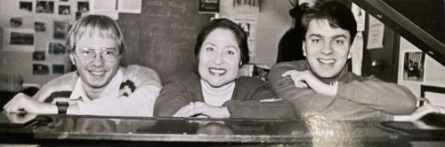
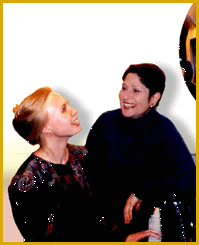
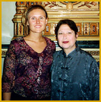
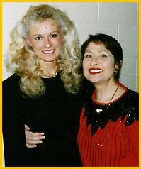
Madeleine's son Olen Hsu, performing a recital at Yale University in 1995. Olen started piano at age 3 with his mother!
Madeleine's student Ildiko Bartha, performing a recital at the Morrison Center for the Performing Arts Recital Hall in Boise, Idaho, 1994.
Sara Opposits, who studied with Madeleine Forte in 1994-95 on a piano scholarship, performs J.S. Bach Prelude & Fugue No. 2 in C Minor for Madeleine's 85th birthday in 2023.
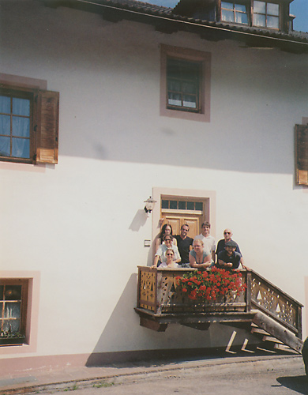
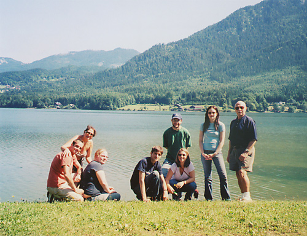
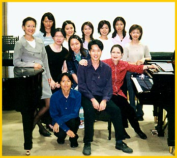
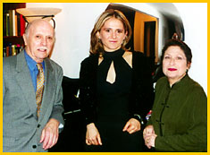
Madeleine Forte giving a Masterclass on French Music at the Akademia Muzyczna
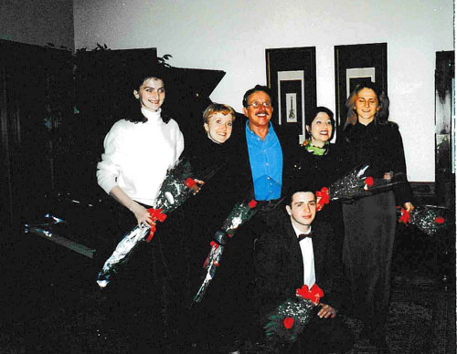
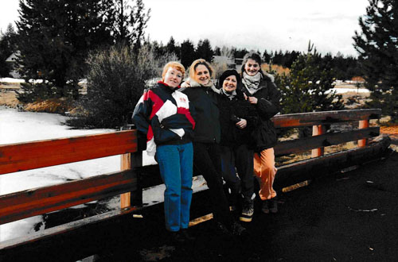
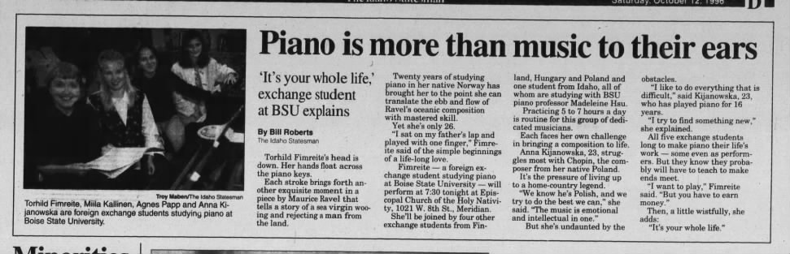
Full article in the Idaho Statesman, Sat Oct 12, 1996
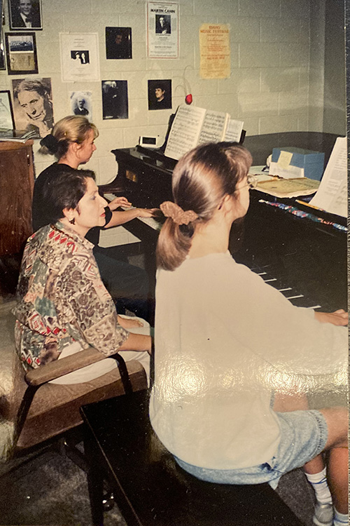
Olivier Messiaen, the Musical Mediator
by Madeleine Hsu [Forte]. (Associated University Presses, 1996.)
A guide for the interpretation and performance of Messiaen's compositions, with pedagogical instruction on rhythm, phrasing and slurring, dynamics, touch/tone production, pedaling and technique. Contains abundant background on Messiaen's philosophy of music, particularly the religious, literary, visual, and musical experiences that affected his works.
"Madeleine [Forte's] book represents a valuable contribution not only to the field of Messiaen research, but also to the study of a broader spectrum of issues related to contemporary music."
— Elliott Antokoletz
"A Summer with Wilhelm Kempff"
Originally published in Clavier, January, 1970; reprinted October, 1991
"The Naked face of Talent: Rosina Lhevinne"
Originally printed in The American Music Teacher, November/December, 1981
Olivier and Yvonne Messiaen letters to Madeleine Forte (1978–2001) are at the Woodson Research Center, Rice Fondren Library, Houston, Texas.
The letters give detailed commentary on Olivier Messiaen's life and works as well as the interpretation of his works for piano. The letters are in French and have accompanying translations. Also included are Madeleine Forte's photographs of Yvonne Loriod-Messiaen and her apartment and the compact disc "Madeleine Forte plays piano music of Olivier Messiaen with commentary by Allen Forte."
The Allen and Madeleine Forte Memorial Collection at UNT
Madeleine and Allen Forte donated their papers, books, scores, photos, recordings, and memorabilia to the
University of North Texas Library, Denton, Texas.
The Sonia Chalon Collection (1917–1977) at the University of North Texas Library, Denton, Texas.
The collection consists of correspondence and memorabilia of Sonia Chalon, mezzo-soprano, First prize at the Concours Comoedia in Paris, France, 1925, Madeleine Forte's aunt. Includes letters and postcards between Sonia Chalon and Madeleine Forte and letters and cards from Camille Saint-Saens and Reynaldo Hahn.
Lesson by Mme Yvonne Loriod-Messiaen to Madeleine Hsu Forte, Paris, France, February 19, 1996
Click here to listen (French Language)
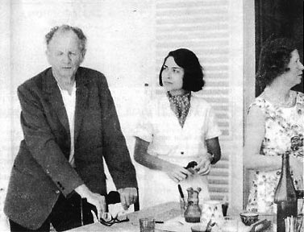